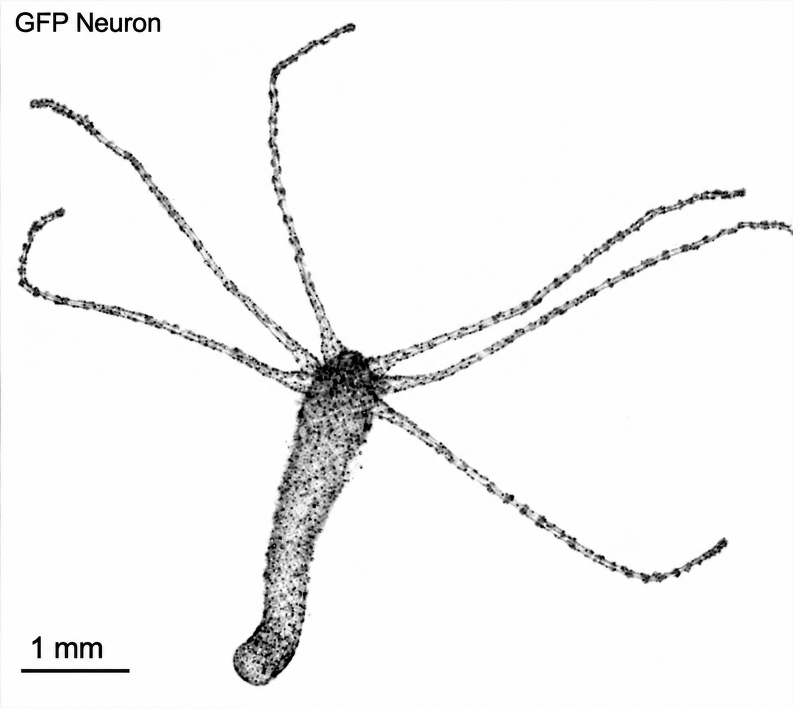

From diffuse nervous systems to organized structures
How does a diffuse nerve net become organized into specialized neural structures?
Hydra has only a few hundred neurons organized largely as distributed nerve nets, yet it produces sophisticated behaviors. Our previous work identified a neuropeptide-driven circuit that controls somersaulting and developed two-photon approaches to activate and ablate specific neurons in behaving animals.
Building on this work, we are investigating how distributed neuronal populations become organized into specialized structures and how changes in neuronal connectivity give rise to new behavioral functions during evolution.
Selected work
- Peptide-driven control of somersaulting in Hydra vulgaris
W Yamamoto, R Yuste · Current Biology · 2023 - Two-photon manipulation of neuronal activity and behavior in Hydra vulgaris
W Yamamoto, R Yuste · STAR Protocols · 2023